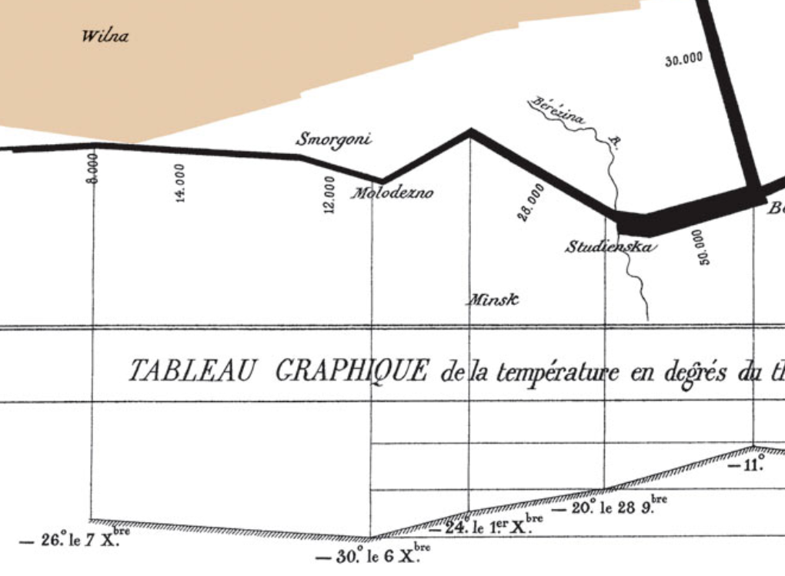
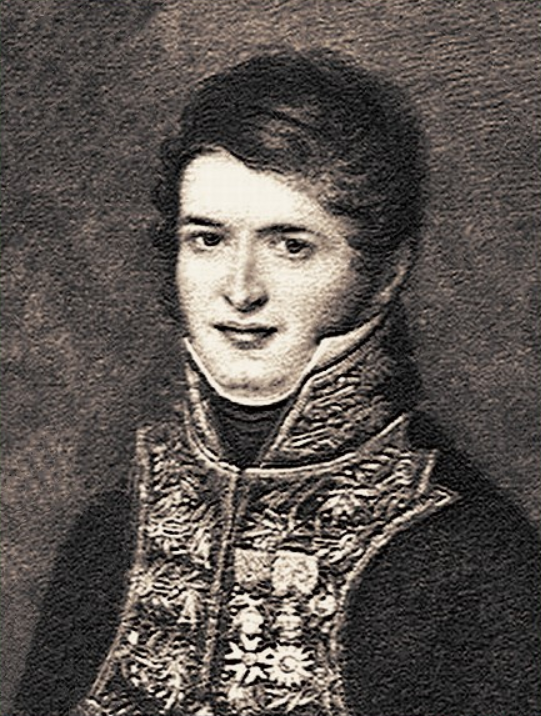
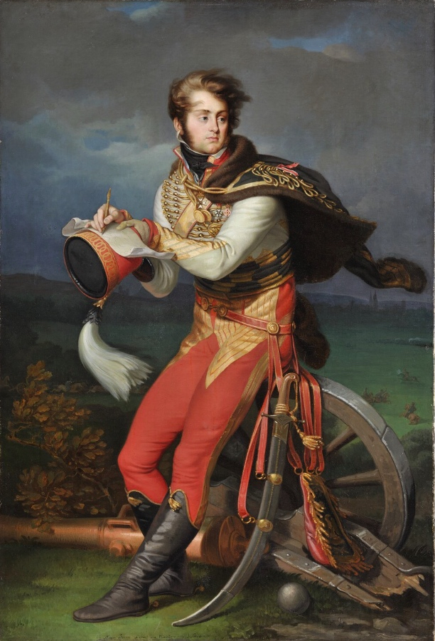
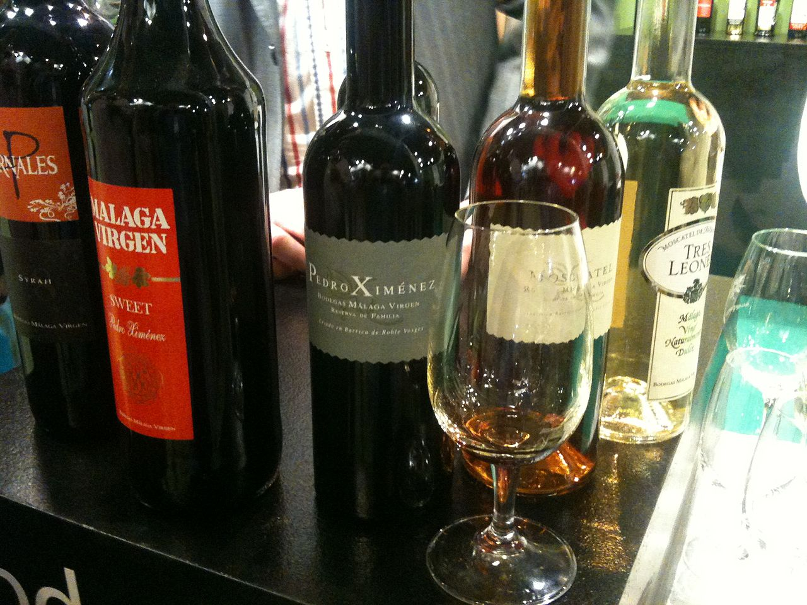
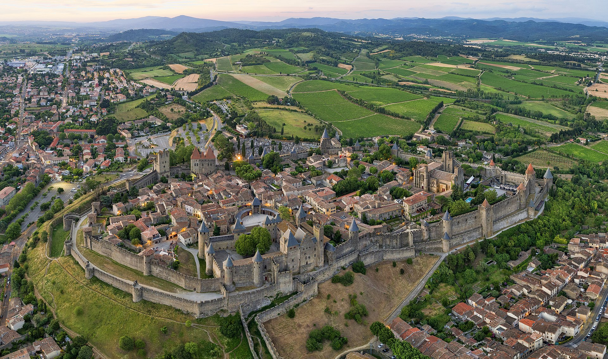
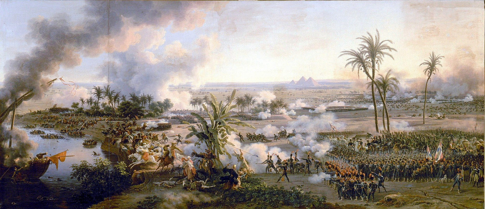
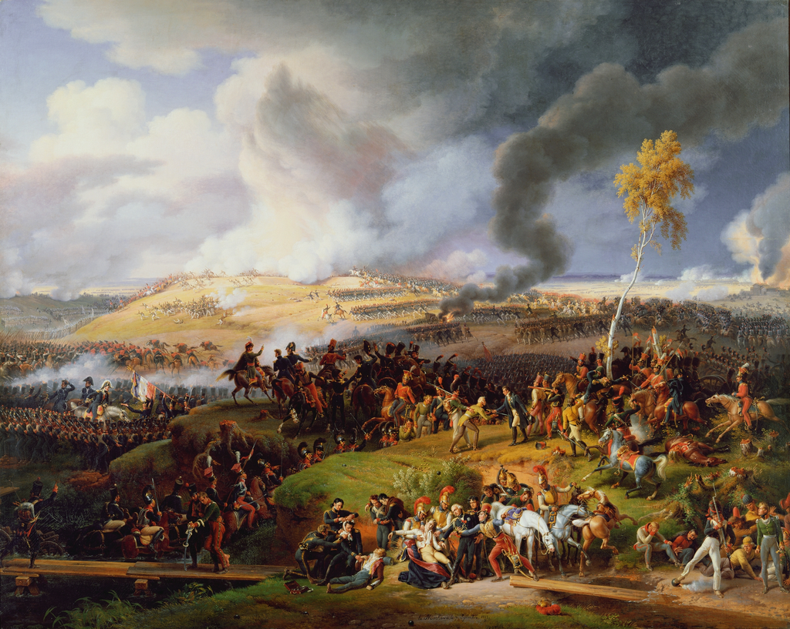
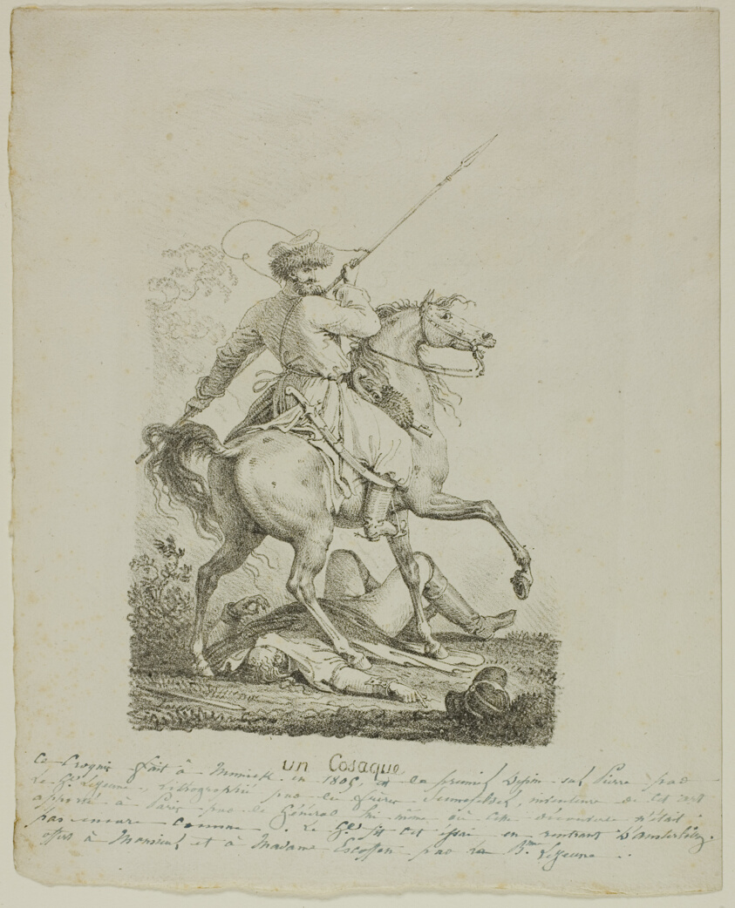

동장군을 만난 사람들 - 빌나로의 후퇴 (상)
게시: 2021-11-01T06:30:52+09:00
러시아의 동장군은 나폴레옹이 러시아에 진격할 때부터 많은 사람들이 우려를 표했던 최대 강적이었습니다. 그러나 11월 초까지도 나폴레옹이 그런 우려에 대해 '모두가 과장된 헛소문'이라며 비웃을 정도로 러시아의 날씨는 온화했습니다. 실제로 나폴레옹을 패배시킨 것은 러시아의 눈이 아니라 진흙이었습니다. 형편없는 도로 때문에 수송에 애를 먹었고 덕분에 보급이 안 되어 그랑다르메는 패배할 수 밖에 없었습니다. 그러나 대부분의 사람들은 '나폴레옹은 러시아의 동장군에게 패배했다'라고 알고 있습니다. 왜 그럴까요? 살아돌아온 모든 사람들이 러시아의 끔찍한 추위에 대해 생생한 증언을 했기 때문입니다. 그리고 그 강추위는 그랑다르메가 베레지나를 건넌 다음에 시작되었습니다.

(유명한 미나르(Charles Joseph Minard)의 나폴레옹 원정 실패의 시각화 차트 중 베레지나 이후의 온도 부분입니다. 보시다시피 스투지엔카 직전부터 계속 떨어지고 있는 것을 보실 수 있습니다. 그나저나 저 차트는 1869년에 만들어진 것으로서, 모두 손으로 그린 것입니다. 비싼 노트북과 스마트폰, 아이패드 등을 가지고 엉뚱한 것만 하고 있는 우리들 모두 반성해야 합니다.)
그 동안 날씨는 추웠다 풀렸다를 반복하며 그랑다르메 병사들을 농락해왔으므로 11월 29일 밤 그들을 덮친 강추위에 대해서도, 이번에도 조금만 견디면 다시 날이 풀릴 것이라고들 기대했습니다. 그러나 그 다음날인 30일은 날씨가 더 추워져서, 군의관 라뇨(Louis Lagneau)의 기록에 따르면 섭씨 영하 30도를 기록했습니다. 인간은 끝까지 희망의 끈을 놓지 않는 동물인지라 그런 악조건 속에서도 병사들은 묵묵히 걸었습니다. 그러나 대자연은 인간의 희망이나 노력에는 무관심한 편이었습니다. 12월 6일이 되자 섭씨 영하 37.5도를 기록할 정도로 추위는 점점 더 심해졌습니다.

(군의관 라뇨는 회고록을 남긴 것 같지는 않습니다만, 다른 사람들이 남긴 회고록이나 기록에 종종 등장하는 군의관으로서, 당시 신참 근위대 소속 군의관이었습니다.)

(르죈은 보통 화가로 알려져 있습니다만 포병 장교이기도 했습니다. 나폴레옹보다 6살 어린 나이였고, 원래부터 그림 공부를 하던 학생이었는데 1792년 파리 화가들이 애국심으로 혁명 전쟁에 자원병으로 나설 때 함께 따라나서 유명한 발미 전투에 참전했었습니다. 이후 곧 부사관으로 승진했다가 시험을 봐서 우수한 성적으로 포병 장교가 되었습니다. 1800년부터는 베르티에의 부관으로 일했는데 마렝고 전투에서 대위로 승진했고, 러시아 원정을 떠나던 1812년에 준장으로 승진했습니다. 그는 러시아에서 후퇴하다가 얼굴에 동상을 입고 부대에서 이탈했는데, 이것이 탈영으로 간주되어 나중에 나폴레옹의 명령에 의해 체포, 투옥되기도 했습니다. 그러다 1813년 전세가 악화되자 사면 복권된 뒤 우디노 원수 휘하에서 루첸(Lutzen) 전투에도 참여했으나, 여러차례 부상을 입었고 결국 그 해가 가기 전에 명예롭게 전역했습니다. 이후에는 계속 화가로서만 활동했습니다.) 여태까지도 동상은 흔한 일이었지만 이젠 정말 극심한 동상이 만연해졌습니다. 르죈(Louis-François Lejeune) 장군의 회고에 따르면 군화를 잃고 맨발로 걷는 병사들은 이미 다리에 아무 감각이 없었는지 발바닥이 다 벗겨져 뼈가 드러난 상태였는데도 그걸 느끼지 못하는 듯 멍한 얼굴로 계속 걸었습니다. 제11 전열 보병 연대의 참모였던 가르디에(Louis Gardier) 소령도 비슷한 모습을 보았습니다. 그는 어떤 병사가 마치 떨어져나간 구두 밑창처럼 발바닥 가죽이 벗겨져 발꿈치에 덜렁덜렁 매달린 상태로 날카롭게 얼어붙은 얼음 바닥을 걷는 모습을 보았는데, 그 병사가 남긴 모든 발자국은 피로 선명하게 물들어 있었습니다. 생존 본능과 염치는 반비례하는 법입니다. 원래부터 사람들은 추위나 굶주림을 견디지 못하고 쓰러진 전우들의 옷과 군화를 가차없이 벗겨냈습니다만, 이렇게 강추위가 계속 되자 사람들은 아직 채 죽지도 않은 전우들을 약탈하기 시작했습니다. 폰 커츠(von Kurtz) 대위는 기력이 다한 어떤 대령이 나무에 기대어 앉아 있는 것을 보았는데, 길을 가던 어떤 병사가 그 대령에게 접근하여 털가죽 코트를 벗기기 시작했습니다. 대령이 지친 목소리로 "이런 젠장, 나 아직 안 죽었어"라고 항의하자 그 병사는 공손하게 "뭐 좋습니다, 대령님. 기다리죠." 라고 말했다고 합니다. 폰 커츠 대위는 다른 병사들도 털가죽 코트 하나를 두고 서로 죽이고 죽는 모습도 목격했습니다. 페젠삭(Fezensac) 대령도 지쳐 쓰러진 장군의 장화를 어떤 병사가 벗겨내는 장면을 목격했습니다. 장군이 제발 평화롭게 죽게 내버려 두라고 힘없는 목소리로 사정하자 그 병사는 이렇게 대답했다고 합니다. "장군님, 저도 그러고 싶습니다만 어차피 다른 누군가가 가져갈 텐데 이왕이면 그게 제가 되었으면 합니다." 극한의 추위는 이렇게 인간의 이기심을 드러내기도 했지만 강인한 의지와 숭고한 사명감, 그리고 의리를 입증하는 계기가 되기도 했습니다. 건강하던 병사들도 추위와 굶주림에 픽픽 쓰러졌지만 보로디노에서 다리를 다쳤던 프랑수아 대위라는 사람은 목발을 짚은 채로 빌나까지 무사히 완주했습니다. 브렉텔(Brechtel)이라는 대위는 아예 다리를 절단해야 했는데, 그는 나무로 만든 의족을 단 채로 무사히 집에 돌아왔습니다. 르죈은 팔에 심한 부상을 입은 포병을 만났는데, 그는 의무병에게 부탁하여 즉석에서 팔 절단 수술을 받았습니다. 르죈에 따르면 의무병이 팔 근육과 뼈를 서걱서걱 잘라내는 동안 그 포병은 마치 관운장처럼 단 한마디 신음소리도 흘리지 않았다고 합니다. 르죈이 그 용기에 탄복하여 아껴마시던 말라가(Málaga) 와인 반병을 내밀자 그 포병은 그걸 단 한모금에 완전히 쭉 비우고는 고향 가르카손(Carcassonne)까지는 갈 길이 멀다면서 빠른 걸음으로 사라져 버렸습니다.

(말라가는 스페인 말라가에서 빚어진 달콤한 맛이 강한 와인으로서 레드도 있지만 주로 화이트 와인입니다. 르죈이 이걸 hip flask에 넣어 가지고 다니며 마신 이유는 말라가가 영국인들이 좋아하던 포르투갈산 포트 와인(port wine)처럼 비숙성 브랜디를 넣어 알콜 농도를 높인 와인이라서 보존성이 좋았기 때문입니다.)

(그 용감한 포병의 고향인 카르카손은 프랑스 남부 지중해 근방 지방인 옥시타니(Occitanie)에 있는 아름다운 성곽 마을입니다. 돌아갈 고향이 저렇게 아름다운 곳이라면 그만큼 귀향 본능이 강했겠네요. 그 포병이 과연 살아서 고향 땅을 밟았는지 궁금합니다.) 포병들은 그런 극한 상황에서도 베레지나의 부실한 다리를 간신히 건너온 자신들의 대포를 버리지 않았습니다. 그들은 끝까지 대포를 끌고갔으나, 그런 환경에서는 결국 인간보다 말이 먼저 쓰러지기 마련이었습니다. 대포를 끄는 최후의 말이 쓰러지면 비로소 포병들은 점화구에 구리못을 박고 대포를 버렸습니다. 보통은 그럴 때 거추장스럽고 지긋지긋한 대포를 마침내 버리게 되어 속으로 기뻐할 것이라고 생각하기 쉬운데, 적어도 포병대 리오테(Lyautey) 중위는 마지막 대포를 버리며 마음이 찢어지는 것 같았다고 기록했습니다. 포병들은 끝내 자신들의 장비를 지키지 못했지만 말들이 다 죽어넘어져도 끝까지 맡은 자산을 지켜낸 부서도 있었습니다. 페뤼즈(Guillaume Peyrusse) 자작이 담당하던 군 재무부(Trésor)의 금화 궤짝들은 상당히 무거운 것이었는데도, 결국 모두 빌나까지 무사히 수송을 마칠 수 있었습니다. 말보다 강인한 것이 사람이었기 때문에, 군 재무부는 손수레 20여대를 동원하여 금화 궤짝들을 실어날랐다고 합니다. 병사들이 책임지고 날라야 했던 것이 대포나 금화 궤짝만 있었던 것이 아니었습니다. 다부가 아끼는 참모였던 폴란드인 코빌린스키(Kobylinski) 대령은 모스크바 후퇴 직후인 말로야로슬라베츠 인근에서 정찰 활동 중 포탄 파편에 맞아 다리가 으스러지는 봉변을 당했습니다. 후툇길에서 그런 부상자가 어떤 최후를 맞이하는지 잘 알고 있던 다부는 6명의 척탄병들에게 코빌린스키 대령의 들것을 직접 맡기며 어떤 상황에서라도 절대 코빌린스키 대령을 버려서는 안된다고 엄명을 내렸습니다. 이 6명의 척탄병들은 그 길고 험한 후툇길에서 정말 헌신적인 노력을 다해 대령을 지켰습니다. 상황이 너무나 악화되자, 코빌린스키 본인이 직접 이 척탄병들에게 너희들이라도 목숨을 건질 수 있도록 자신을 내버리고 가라고 부탁했으나 이들은 완강히 대령을 날랐습니다. 결국 1명의 척탄병이 살아남아, 코빌린스키 대령이 누운 들것을 빌나에 먼저 도착한 다부의 사령부에 혼자서 질질 끌고 나타났다고 합니다.
 
(르죈의 여러 작품 중 이집트 피라미드 전투와 러시아 보로디노 전투가 가장 유명합니다. 두 작품 모두 공중에서 내려다보는 듯한 시점에서 그린 것이 특징이지요.)

(하지만 르죈이 프랑스 미술계에 끼친 가장 큰 영향은 당시 독일에서 막 개발된 석판화 기술을 프랑스로 도입했다는 것입니다. 원래 석판화 기법은 화가가 아니라 독일인 배우 겸 극작가인 세네펠더(Alois Senefelder)가 개발한 것인데, 르죈은 1806년 프로이센 전쟁 때 세네펠더의 집을 방문하여 저녁을 얻어먹는 자리에서 그 기법을 전수받고는 그 자리에서 이 코삭 기병의 그림을 백여 장 찍어서 파리로 돌아왔고, 그 중 한 장을 나폴레옹에게 바쳤다고 합니다. 이후 프랑스에서도 석판화가 크게 유행했다고 합니다.)
** 하편에서 계속... Source : 1812 Napoleon's Fatal March on Moscow by Adam Zamoyski
https://fr.wikipedia.org/wiki/Anatole_de_Montesquiou-Fezensac https://www.napoleon-empire.com/personalities/lagneau.php https://warandsecurity.com/2012/12/14/the-end-of-napoleons-russian-campaign/ https://en.wikipedia.org/wiki/Louis-Fran%C3%A7ois_Lejeune https://www.artic.edu/artworks/39775/a-cossack